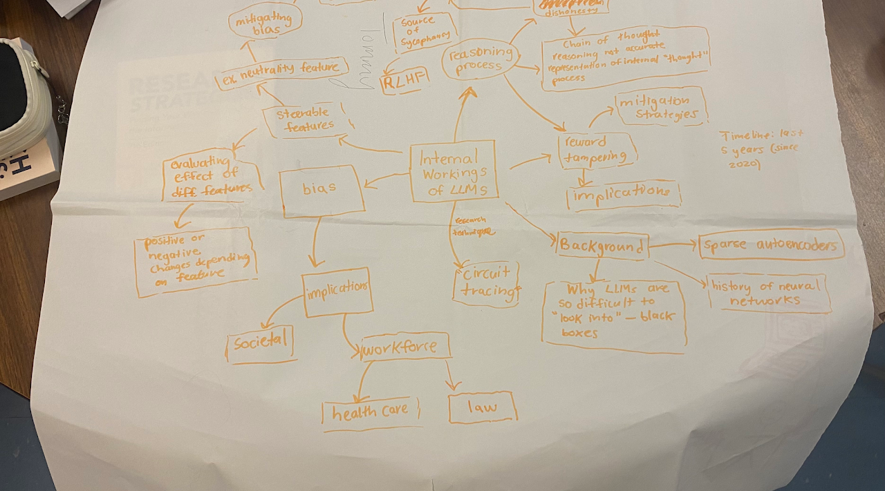
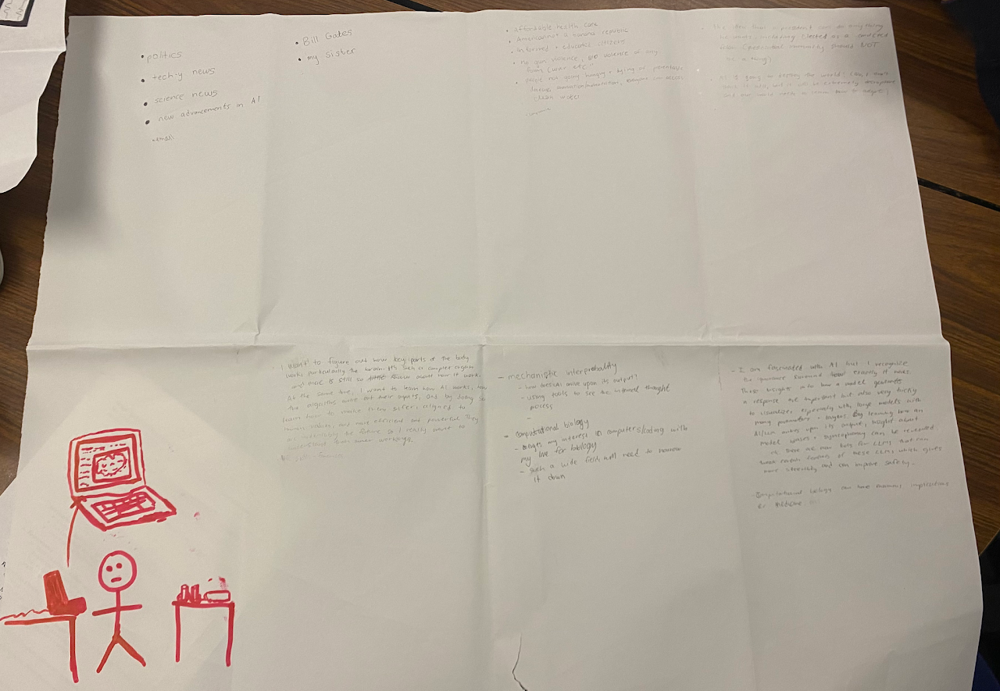
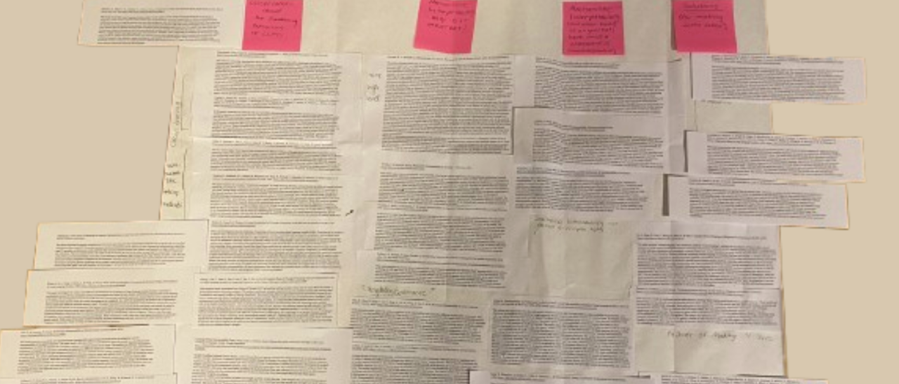
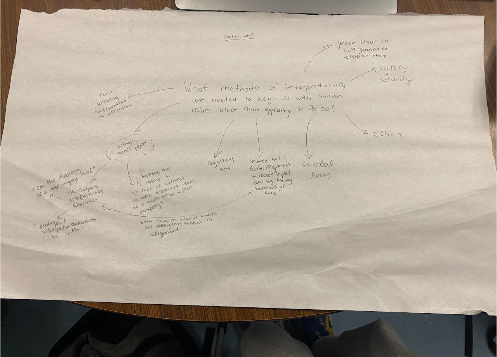
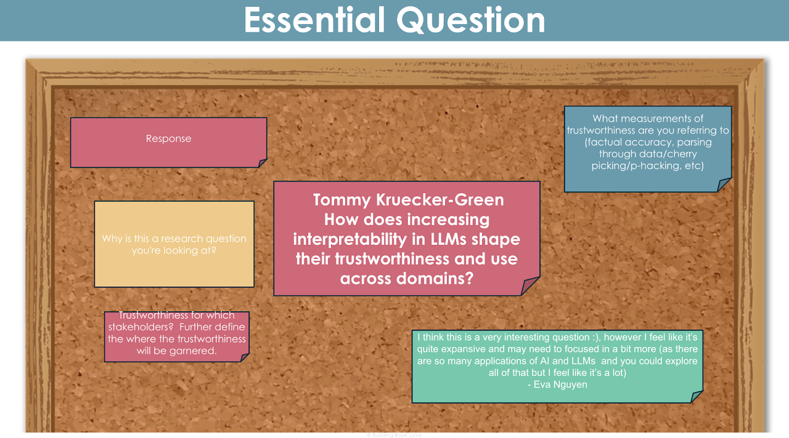

Tommy Kruecker-Green
Hi! I’m Tommy.
As a researcher, I am interested in science, especially in areas of biology - like bioengineering and computational biology. I already have experience with bio research as club leader and active member for BioBuilder club. This past year, our group tested a variety of enzymes that can digest PET plastic. Our work continues!
I also have an interest more generally in technology and how rapidly advancing technologies, like AI, can improve health outcomes and advance drug discovery. AI is also somewhat of a black box at the moment but there have already been efforts into mechanistic interpretability that interest me.
To what extent are interpretability tools a viable way to detect and/or mitigate harmful AI behaviors?
How does the effectiveness of feature steering in mitigating LLM bias, sycophancy, and dishonesty compare to traditional training-based alignment methods?
By researching new method of interpretabilities such as circuit tracing and feature analysis, I hope to learn about how the “mind” of an LLM works. What is internally activated before tokens are determined with finality? Understanding these complex mathematical decisions and activations have for a long time remained a black box to researchers. More lately, within the last two years, progress has been made. These new tools still aren’t perfect by any means and there are so many unknowns, but they are the first step to ensuring a future of transparent AI. In addition to research, I will run my own experiments with tools that allow the discovery and modification of certain “features” that activate within an LLM, and hopefully gain insights about how certain features can can be modified to better align with human values by toning down the strength of activations that relate to problematic behaviors such as covert bias and sycophancy.
I learned that I have trouble with organizing myself. But failure is part of the solution to the problem. There are many instances looking back where failure could have been avoided had I made better choices and fostered better habits. I will use my ability to fail and recover in my own research by making a concerted effort to be organized, to set a timeline, and keep focused and on track. I will also ask for clarification when I need it and will not be afraid to ask a teacher for advice.
Presearch
This is for exploring the initial concepts and gathering foundational knowledge. It took me quite a while!
Mind Map

LEAP Map

Rough & Ugly Questions
How does increasing transparency and interpretability in AI models shape the future of trustworthy AI deployment?
Who: AI developers, safety researchers, policymakers, users
What: Bug/failure diagnosis, public trust; could diverge into new subfields in AI governance; or expose security vulnerabilities.
Where: Globally — wherever AI is deployed in critical domains (healthcare, finance, government).
Do more “legible” or “transparent” models translate to safety? Or could this be a bad thing this transparency create new risk? For example, would a transparent AI make it easier exploitation of model weaknesses, which could be used by bad actors?
And if both are true, how can the pros and cons be balanced? Transparent for all, or just some people?
How do emergent behaviors and “strategic deception” in AI challenge current methods of safety testing/alignment?
Who: AI developers, safety researchers, policymakers, users
What: Safety testing protocols; alignment training; certification standards for “aligned” models.
Where: Wherever frontier models are deployed, or wherever AI makes consequential decisions without perfect human oversight. For the latter, this is not the case right now but could be in the future.
Are current safety benchmarks and audits enough or do “situationally aware” models find ways to circumvent them? I recently read about a new model released by Anthropic that passed their safety tests but the researchers realized it was seemingly aware that it was being tested, which meant it could have just been faking alignment. (Like how a test taker is on their best behavior because they know they are being evaluated). Is there a way to measure if they’re actually passing these tests and not faking their alignment?
What does “alignment” mean if models are rewarded for appearing aligned but secretly preserve their preferences?
Do we need continue with current safety approaches (“red teaming” for example) or will there need to be changes?
What will happen to the current trust placed in RLHF and other alignment techniques?
How does scaling AI models, in size and domain, change their nature and detectability of their failures and unexpected behaviors?
Who: AI developers, safety researchers, policymakers, vulnerable individuals affected by AI harm.
What: Scaling laws (both for performance and misbehavior), transparency or “microscope” tools for large models.
Where: APIs, public-facing models, closed research environments, high-stakes deployment.
Is anomaly detection for weird behaviors scalable? Or not as these models become more complex?
ROL Map
Please excuse the quality...

Primary Research Tracker
Metamoment

Annotated Bibliography
Working Essential Question & Feedback
